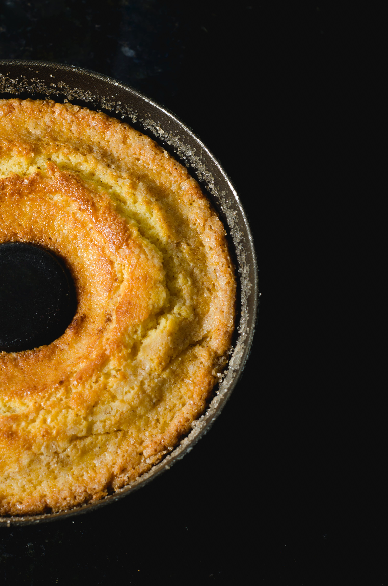

Receita de Café
- Café moído: 2 colheres de sopa por xícara (aproximadamente)
- Água: 200ml por xícara
- Ferva água suficiente para a quantidade de xícaras de café desejada.
- Enquanto a água está fervendo, meça o café moído. Use cerca de 2 colheres de sopa de café moído para cada xícara de café que você deseja fazer.
- Coloque um filtro de papel em seu porta-filtro de café.
- Despeje um pouco de água quente sobre o filtro para enxaguá-lo e remover qualquer sabor residual do papel.
- Coloque o café moído no filtro enxaguado. Espalhe uniformemente.
- Quando a água estiver fervendo, retire-a do fogo e deixe descansar por cerca de 30 segundos. Isso ajudará a garantir que a água não esteja muito quente, o que pode queimar o café.
- Despeje a água quente lentamente sobre o café moído no filtro, cobrindo todo o café de maneira uniforme. Use cerca de 200ml de água para cada xícara de café.
- Aguarde enquanto o café é coado pelo filtro para a jarra ou xícara abaixo.
- Uma vez que o café tenha sido completamente coado, sirva imediatamente.
- Se desejar, adicione açúcar, leite ou creme a gosto.
-
Ingredientes:
-
1.Preparação do café:
-
2.Preparação do filtro:
-
3.Adicionando o café moído:
-
4.Preparação do café:
-
5.Servir:
Relacionado:

Pão

Bolo de cenoura